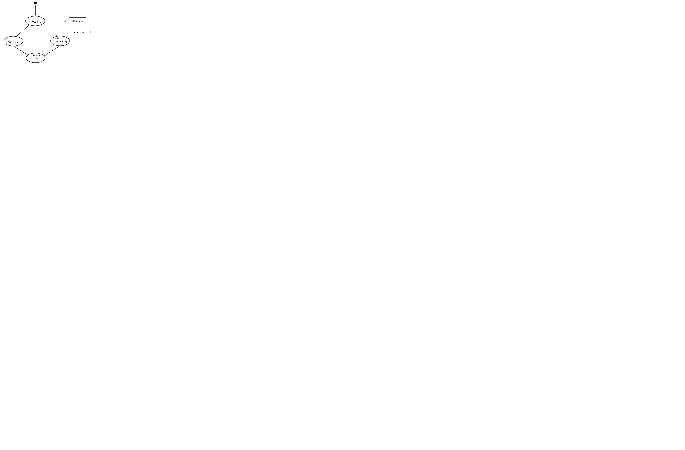

Technologischer Kontext
Zustandsübergänge einer TA-gesicherten Resource
In [gupta-1997] Kap 3.2.1 sind die Zustandsübergänge einer transaktionsgesicherten Ressource in einem 1/2 phase commit Protokoll beschrieben. (Abort(ing) entspricht dem gängigeren rollback(-ing).) Bzgl. des 1 phase commit protocols lassen diese wie inAbbildung 1 reduzieren.
